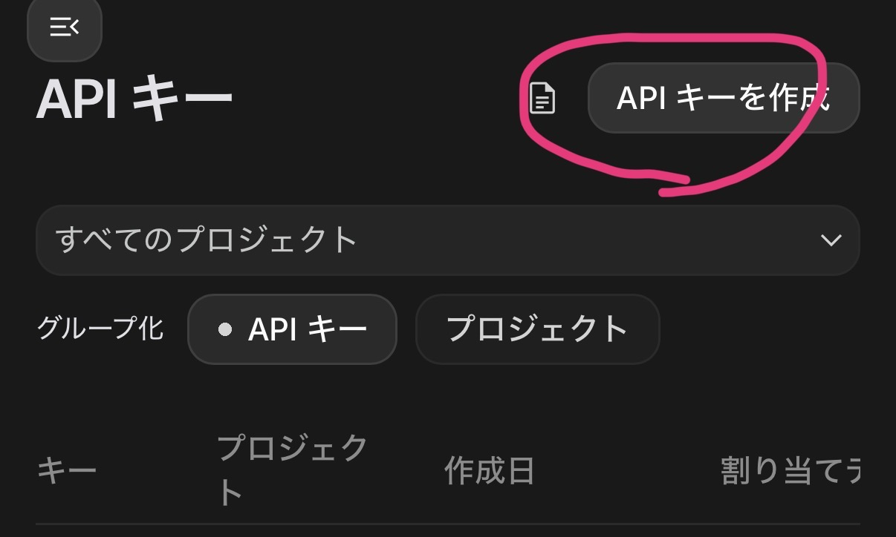
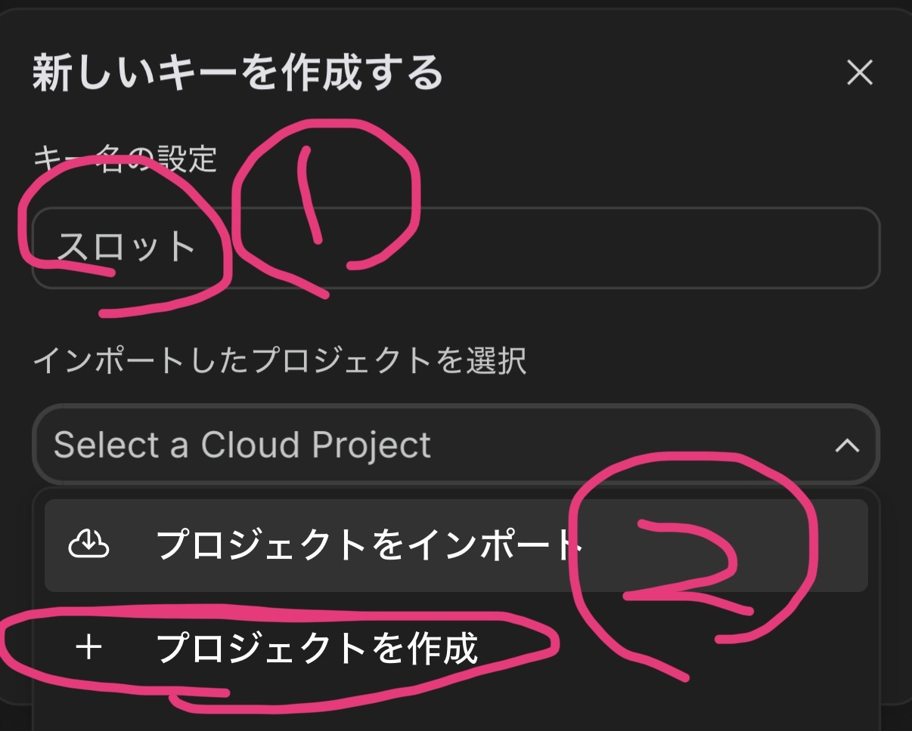
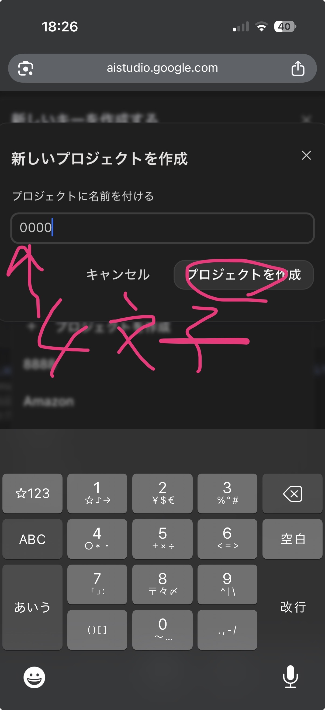
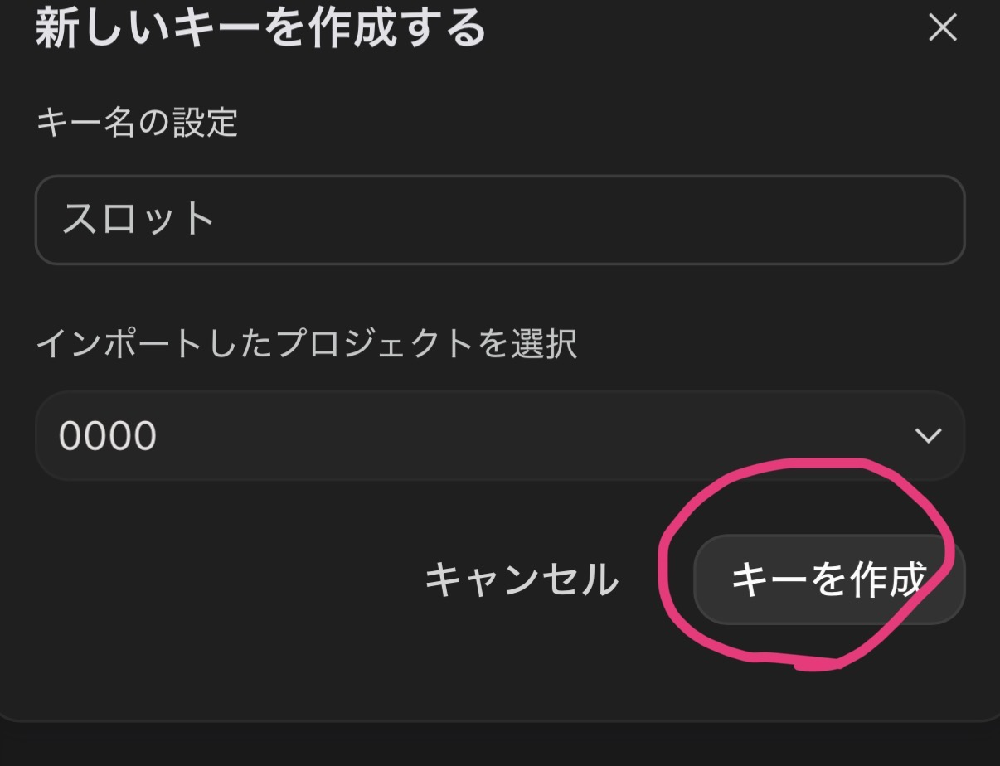

Google AI Studioにログインしたら、右上の「APIキーを作成」ボタンをクリックします。
キー名を入力し（例：スロット）、「プロジェクトを作成」を選択します。
プロジェクト名を入力します。4文字以上で好きな名前を入れてください（例：0000）。入力したら「プロジェクトを作成」ボタンをクリック。
最後に「キーを作成」ボタンをクリックすると、APIキーが生成されます。
生成されたAPIキー（AIza...で始まる文字列）をコピーして、アプリの設定画面に貼り付けてください。